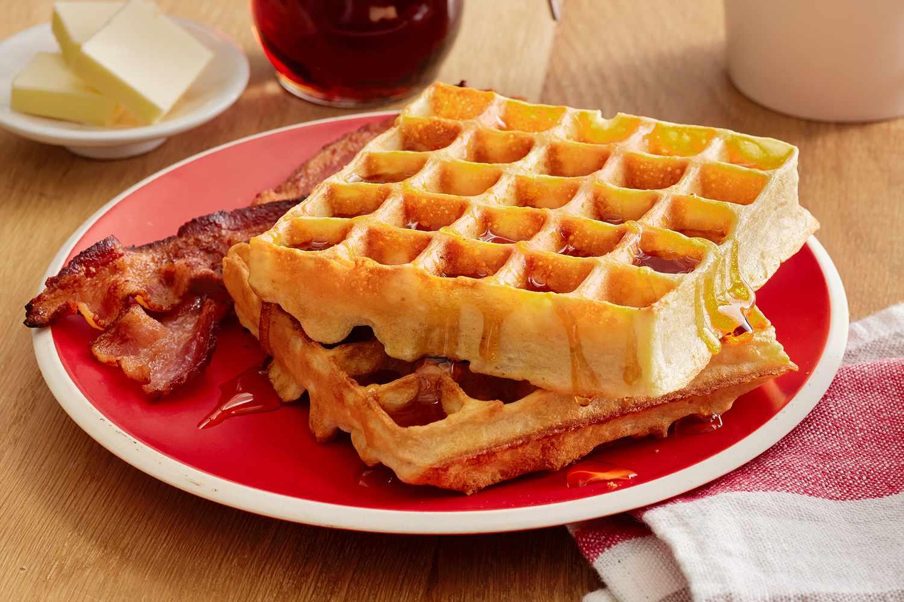

Waffles!

Description
This waffle recipe is the only one you'll need to make homemade waffles
with your waffle iron. Simple pantry ingredients mix up quickly in this
easy batter that can be used right away or stored in the refrigerator for
up to a week. Serve waffles hot with whipped cream and fresh fruit or with
butter and maple syrup for either breakfast, brunch, or a snack.
Ingredients
- 2 cups ap flour
- .2 tsp baking powder
- 2 tbl white sugar
- .5 tsp salt
- 2 egg whites
- 2 egg yolks
- 2 tbl grated lemon zest
- 1 tsp vanilla extract
- 2 cups milk
- 6 tbl butter, melted
Steps
- Gather all ingredients.
- Preheat a waffle iron according to manufacturer's instructions.
-
Whisk the flour, baking powder, sugar, and salt together in a mixing
bowl; set aside. Beat egg whites until foamy in a separate large glass
or metal mixing bowl. Whisk the egg yolks, lemon zest, and vanilla
extract together in a third bowl; whisk in the milk. Stir in the flour
mixture until smooth. Fold in the melted butter and then the beaten egg
whites until just incorporated.
-
Cook the waffles according to manufacturer's instructions until golden
brown.
- Enjoy with maple syrup, butter, or your topping of choice!